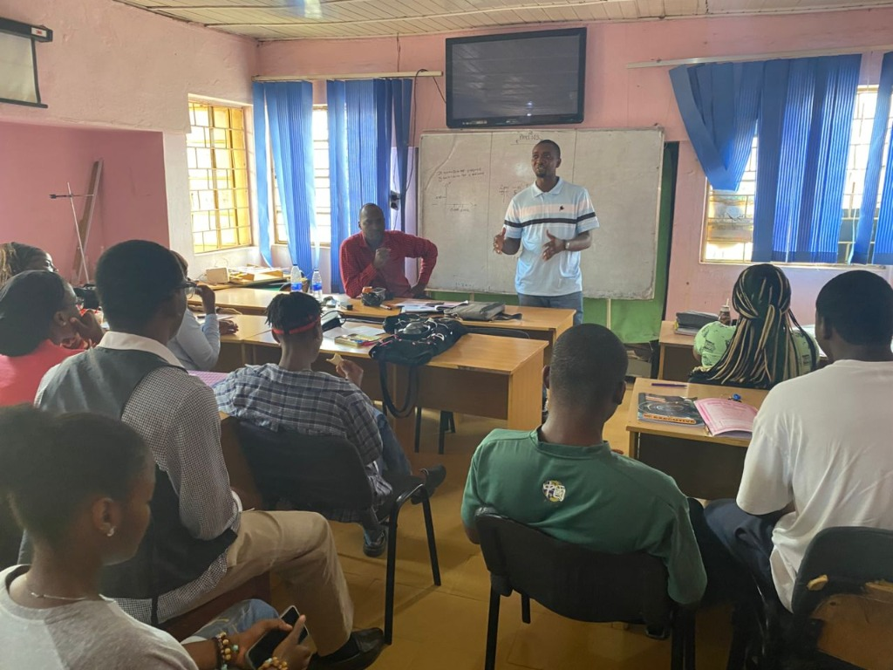
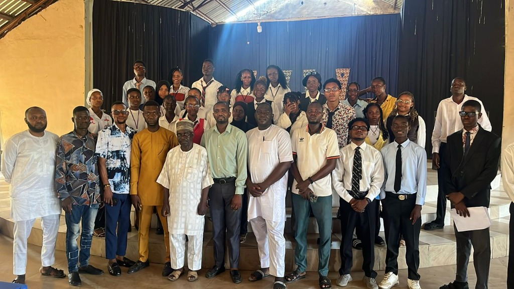
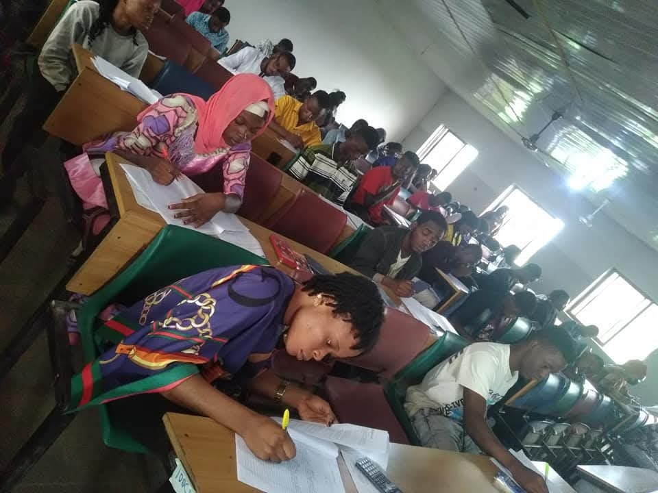
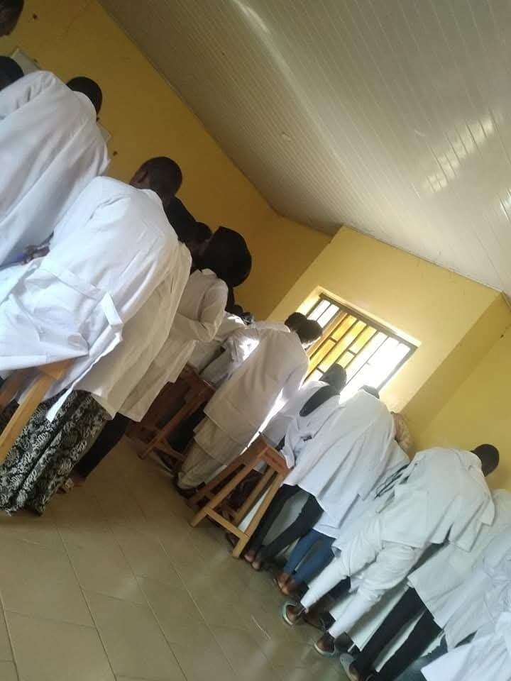

College of Education
National Certificate in Education
Build teaching knowledge, practical skills, and a strong foundation for a career in education.
Explore programme →Sam Ale College of Advanced Studies
Education that opens doors and a community that helps you walk through them. Explore our NCE and advanced studies pathways in Kwali, Abuja.
About Sam Ale College
A college community committed to helping students grow through learning, guidance and opportunity.
Sam Ale College of Advanced Studies brings together its College of Education and advanced studies pathways in a focused campus environment in Kwali, Abuja.
The college was established with a commitment to accessible, supportive education. Its NCE programme received approval from the National Commission for Colleges of Education in March 2017, according to the college information provided on the original website.
Explore our programmes →Founder & Chancellor
Professor Sam O. Ale began his career at the School of Basic Studies, Ahmadu Bello University, Zaria. He became a Professor of Mathematics and Mathematics Education at Abubakar Tafawa Balewa University, Bauchi, in 1988.
His long-standing commitment to advanced studies and education informs the college’s founding vision.
Educate · Empower · Excel
Find your pathway
Explore the academic pathways offered by Sam Ale College and find the right place to begin.

Build teaching knowledge, practical skills, and a strong foundation for a career in education.
Explore programme →
Prepare for the next academic step through a focused advanced studies pathway.
Explore programme →Campus life
A focused environment, shared experience and everyday moments that make a college community.


Your next step starts here
Choose a study pathway and prepare an application email. You will need to review and send it yourself; this website does not submit applications or upload documents.
Get in touch
For programme, application, or campus questions, contact the admissions team.
admission@samalecollege.edu.ng07036627725